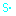
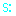
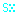
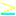

Entry Control: Servos are attracted to the green check, and repelled by the red x.
( ) Set Direction: Makes the servo move in the specified direction. This can make the servo reverse direction. If it points the servo in a direction it can not go (because there is no servo rail), it will move in that direction at the next possible opportunity (Pacman-style).
( ) Point Top: Sets the top of the servo. It does not make sense to point the top parallel to the direction of motion
   Set Speed: Sets the servo speed. Speed 3 is the default speed.
Spin: Spin clockwise or counter-clockwise. If a servo passes over one, and then reverses direction and passes over it again, it will be facing in the original direction.
Trap: Stops the servo motor. It will resume motion when given a redstone signal. Sockets will continue to operate.
Socket Control: Controls the redstone signal sent to the socket.
Turns on a steady redstone signal.
Turns off a steady redstone signal.
Pulses the signal. If the signal is steady on, it will flicker instead.
Item Shifter Control: Changes settings in the Item Shifter; this allows control of the same settings that are in the GUI.
Export Mode
Import Mode
Pulse Exact
Pulse Some
Stream
Target Slot; set with an integer popped from the stack.
Transfer Limit; set with an integer popped from the stack.
 Compare: Pops two integers from the stack and compares them. (The cyan underline indicates the bottom of the icon.)
Boolean Value: Pushes true or false.
Integer Value: Pushes 1 or 0. (The # is presently not available.)
Sum: Sum two integers popped from the stack, and push the value onto the stack.
Product: Multiply two integers popped from the stack, and push the value onto the stack.
Drop: Pop a value from the stack, and do nothing with it.
Dup: Duplicates the top value of the stack.
Redstone Pulse: Emits a redstone pulse from the rail.
Jump:
Pop a boolean from the stack. If it is true, then the next found instruction is jumped over.
Unconditionally skip the instruction on the next (adjacent) servo rail. If the next servo rail is empty, then there will be no effect.